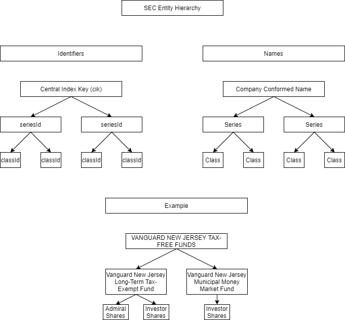

My goal in writing this document is to share details on a piece of software I wrote that extracts holdings and prospectus data for investment companies that are regulated by the Investment Company Act of 1940 (40 Act) of the U.S. Securities and Exchange Commission (SEC). I will cover the following:
Definitions
SEC Entity Structure
Available Information
Information Flow
Database Schema
Design Decisions
Definitions
Mutual funds are registered as investment companies under the 40 Act. Mutual funds purchase, hold, and sell securities. Securities are financial instruments, generally a stock (equity) or a bond (debt). Mutual funds offer their own equity shares to the public. The public can purchase and sell the mutual fund shares at their net asset value (NAV) per share. Shareholders pay mutual funds an expense ratio to purchase, hold, and sell securities on their behalf. Per the 40 Act, mutual funds must report their holdings and prospectus. Holdings reports contain net assets and prospectuses contain expense ratios. Exchange-traded funds (ETFs) are also generally governed by the 40 Act, and as such are required to report holdings and prospectuses. The SEC makes these reports available to the public, and I wrote this software to extract and tabulate their data.
SEC Entity Structure
Although the SEC categorizes mutual funds as investment companies, they also call them series. The SEC labels each series with a unique ID. Each series has at least one share class, which the SEC denotes as a class. Each class also has a unique ID. I'm unaware if there is an upper bound on the number of classes that a given series can govern. Each series exists underneath a registered company, which is provided a unique ID, called a CIK (Central Index Key). A company can oversee multiple series; again, I'm unsure if there is a maximum number. This information is necessary to understand the database schema and the design decisions I made when writing the software. Below, you can find a visual aid for the SEC's entitiy hierarchy.

Available Information
At the fund level, I am most interested in two variables:
Net assets
Expense ratio
The SEC requires funds to submit net assets in their periodic holdings reports. Prior to 2019 Q3, funds completed Form N-Q to report their holdings. Thereafter, funds (with >$1 billion in net assets) need to submit Form NPORT-P to satifsy their holdings reporting requirements. More information on this transition can be found here. There are two major differences between these reports: Form NPORT-P follows XBRL formatting, which dramatically reduces data extraction error, and Form NPORT-P is published quarterly, while N-Q was biannual. Extracting net assets from Form N-Q is error-prone, due to the inconsistent HTML formatting across companies, funds, and time. N-Q and NPORT-P can be amended and resubmitted, with the names N-Q/A and NPORT-P/A; my software replaces original holdings reports with their amendments.
The SEC maintains a disaggregated dataset of prospectus information for all registered mutual funds, which can be found here. This dataset provides expense ratios for every fund's share classes. Requirements for publishing prospectuses can be found here. Unfortunately, the dataset does not include Form 497K, which may capture more frequent changes in classes' expense ratios. Form 497K is not required to be XBRL-compliant, so information extracted from it would include significant error.
There are three dimensions of difficulty in joining these two data sources: filing date, frequency, and entity level differences. I will cover how I dealt with these difficulties in the Design Decisions section. Below, you will find a table that summarizes the data sources.
Information Flow
The software supports two major flows of information, one to collect net assets and one to collect expense ratios. In the diagram below, the leftmost flow describes the process followed to extract net assets, and the rightmost for expense ratios.
The net assets flow begins with programmatically downloading SEC Index files. Index files contain every SEC filing for a particular quarter; a list of all SEC filing types can be found here. The software leverages edouard.swiac's python-edgar package to download the files. python-edgar will only download Index files that are not yet present in the directory. My software also accomodates a proxy server, if needed, when downloading the files. Next, it translates the Index files' names to quarter end dates, and subsets to those that are later than the most recent filing date in the holdings database table. This incurs significant time savings when running the application consecutively, as it will not read in Index files for which information has already been gathered. Then, it filters the filings within the Index files to only include the desired CIKs and filing types, which are specified in the configuration json file. Filtering occurs in a pandas dataframe. The filings are first sorted to accomodate filing amendment overwrites, and CIKs are stripped of leading zeros to accomodate the string comparison. The process results in a list of dictionaries with filing type and filing url. The extraction of net assets from the filing is dependent on if it's N-Q or NPORT-P, but it extracts using beautifulsoup4 regardless. NPORT-P is relatively straightforward; it searches for the "netassets" tag, and gets its value. If N-Q, I developed an imperfect algorithm that attempts to find the net assets value:
Find second occurrence of desired series ID in the document; third if "Name of Fund" is present
Find next occurence of case insensitive "net assets"
If this element contains case insensitive "percentage of net assets" (or similar)
Return to second step
For the ten next td's
If td element includes ",###"
Get all numeric values in element
Break
Else
Continue
Three types of error occur when using this algorithm: it does not find a net assets value, it extracts the incorrect net assets value, or it extracts the value, but it is in terms of thousands of dollars instead of the nominal value. Please do share (or commit) any improvements you can make on this process. Extracting the other pieces of information (series ID, period end date, etc.) are consistent across the two filing types. Once the information is gathered, it is placed in preallocated lists (filled with Nones). These lists are then inserted into the dates and prospectus tables in the database.
The expense ratio flow begins with creating a list of quarter end dates between (and inclusive of) the configured start date and the present. Then, it derives a list of prospectus zip file urls to be downloaded from this list of quarters. If a given prospectus zip file is not already present in the directory, it is downloaded using kennethreitz's requests package. Again, a proxy server is accomodated, if needed. Next, it creates a list of prospectus zip file directories that represent quarters greater than or equal to the most recent filing date in the prospectus database table. Thereafter, it extracts the sub.tsv and num.tsv files from each of the zip file directories mentioned above. Documentation on these files can be found here. These files are filtered, joined, and pivoted so the data can be placed in preallocated lists. The lists are inserted into the dates, entities, prospectuses, and quarters tables in the database.
The database is then queried, and the information can be used for a multitude of purposes: visualizations, elasticity studies, optimization calculations, and others. A visual aid for the information flow can be found below.
Database Schema
The database consists of five tables: holdings, prospectus, dates, entities, and quarters. Below, you will find a dictionary of fields:
entities
CLASS_ID: unique ID given to share class
SERIES_ID: unique ID given to series (fund)
CIK: central index key — given to company that oversees the series
COMPANY: name of company associated with CIK
dates
DATE: date associated with prospectus EFFECTIVE_DATE or holdings PERIOD_END_DATE
QUARTER_END_DATE: final day in DATE's quarter
prospectus
ADSH: filing accession number (unique ID)
FILING_TYPE: type of filing (e.g. 485BPOS)
FILING_DATE: date the filing was submitted
EFFECTIVE_DATE: first date where the prospectus information (e.g. expense ratio) is applicable to investors
CLASS_ID: see entities table
EXPENSE_RATIO: portion of value of investment that the investor can expect to pay annually following the EFFECTIVE_DATE; is equal to the class's total annual operating expenses over the class's net assets
NET_EXPENSE_RATIO: EXPENSE_RATIO less any fee waivers and reimbursements
AVG_ANN_1YR_RETURN: class's average annual returns, 1 year
AVG_ANN_5YR_RETURN: class's average annual returns, 5 years
AVG_ANN_10YR_RETURN: class's average annual returns, 10 years
AVG_ANN_RETURN_SINCE_INCEPTION: class's average annual returns since inception
holdings
ADSH: see prospectus table
FILING_TYPE: see prospectus table
FILING_DATE: see prospectus table
PERIOD_END_DATE: final day in three-month period that the filing covers
SERIES_ID: see entities table
NET_ASSETS: assets less liabilities for the series
quarters
QUARTER: quarter end date
The entities and dates tables have column indexes on CLASS_ID and DATE, respectively. The quarters table holds all quarter end dates between (and including) the minimum and maximum EFFECTIVE_DATEs in the prospectus table. It is used to impute expense ratios, which is covered in the Design Decisions section of this document. The holdings table can still be joined with the entities table, despite there being no foreign key reference; the entities table needs be grouped on SERIES_ID to join the tables. I attempted to implement normalization rules after constructing the database:
1NF: no cell cotains more than one value, and there are no repeating groups of fields
2NF: each field within a table is dependent on its primary key(s)
3NF: non-primary key columns are solely dependent on the primary key(s)
1NF is met. I believe 2NF and 3NF are met to a reasonable degree. One could argue that each field in the prospectus and entities tables are dependent on the ADSH field, which would violate these rules. I decided to make the entity ID (SERIES_ID for holdings, CLASS_ID for prospectus) and pertinent date (PERIOD_END_DATE for holdings, EFFECTIVE_DATE for prospectus) the composite primary keys, so that document amendments would overwrite their originals. This would not have been possible using ADSH as the primary key, because orignial and amendment documents have different ADSHs. Below, you will find the database schema:
Design Decisions
The software design was significantly impacted through the use of multiple tools: object-oriented programming, version control, unit testing, logging, and database implementation. I did not strictly follow test-driven development, but I tested any method for which I could not reasonably and visually gauge success. The use of a configuration json file, where non-technical users can input the funds they would like to gather data on, makes the software more accessible.
Above, I mentioned three main difficulties in joining the holdings and prospectus data sources. I address these difficulties when querying the database.
1. Entity Level Differences
I resolve this by averaging each fund's share class's expense ratios for each quarter where there is available data for the fund. This is at the recommendation of the SEC's Report on Mutual Fund Fees and Expenses:
"We believe, therefore, that when an expense analysis includes the relationship between funds' expense ratios and their asset sizes, it is appropriate to evaluate the asset-size of multi-class funds at the fund level."
The report provides rationale for fund-level analysis here.
2. Filing Date Differences
I resolve this by associating each pertinent date (PERIOD_END_DATE for holdings, EFFECTIVE_DATE for prospectus), with its quarter end date. Then, the two tables can be joined on these quarter end dates. I decided to bin dates at their quarter ends to best match the SEC's recommendation of evaluation at the fund-level. The fund-level data (net assets) are currently reported each quarter through the NPORT-P, so that is where I binned the data.
3. Frequency Differences
I resolve this by imputing expense ratios, when they are not reported. The imputation is to take the last available period's (averaged) expense ratio in the prospectus table, for that fund. I believe this is the correct decision because expense ratios are reported less frequently than net assets and net assets value varies more across time. I thank peterm from stackoverflow for sharing his SQL code that shows how to accomplish this.
Final Remarks
Please reach out with any questions or suggestions. Better yet, clone the repository and commit new features. Thanks for reading!